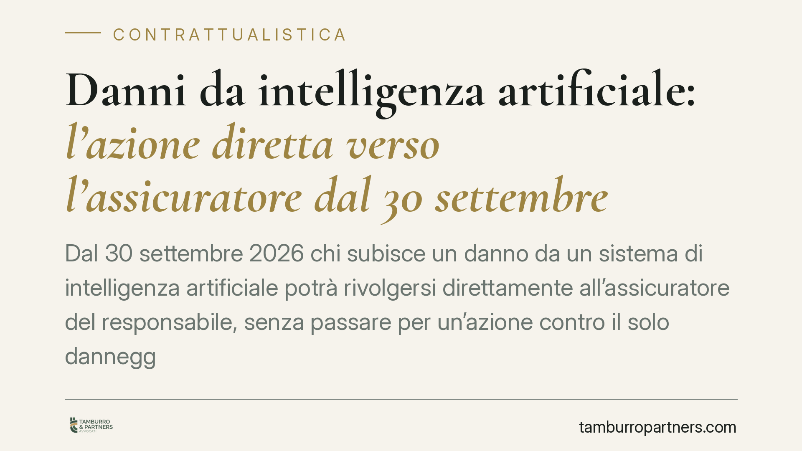

Danni da intelligenza artificiale: l'azione diretta verso l'assicuratore dal 30 settembre 2026
Dal 30 settembre 2026 chi subisce un danno da un sistema di intelligenza artificiale potrà rivolgersi direttamente all'assicuratore del responsabile, senza passare per un'azione contro il solo danneggiante. Il D.lgs. 160/2026 introduce questa facoltà, ma senza obbligo di polizza né fondo di garanzia: una tutela reale, con confini precisi che è bene conoscere in anticipo.

Il fatto
Il D.lgs. 160/2026, all'articolo 20, introduce nell'ordinamento l'azione diretta del danneggiato nei confronti dell'impresa assicuratrice del soggetto responsabile di un danno causato da un sistema di intelligenza artificiale. In concreto: chi subisce il danno può chiedere il risarcimento direttamente alla compagnia, senza dover prima ottenere una condanna del danneggiante e poi rivalersi.
La norma entra in vigore il 30 settembre 2026. Riguarda le imprese che utilizzano sistemi di IA nella propria attività, le imprese assicuratrici e, naturalmente, i soggetti danneggiati.
Inquadramento normativo
L'azione diretta non è un istituto inedito. Il modello più noto è quello della responsabilità civile automobilistica (art. 144 del Codice delle Assicurazioni Private, D.lgs. 209/2005), dove il danneggiato da sinistro stradale può agire direttamente contro l'assicuratore del veicolo responsabile. Il legislatore replica qui lo schema, estendendolo ai danni da intelligenza artificiale.
Il punto critico è però la differenza rispetto al modello RC auto. Nel settore automobilistico l'assicurazione è obbligatoria e opera un fondo di garanzia per i casi di veicoli non assicurati o non identificati. Nel regime del D.lgs. 160/2026 queste due garanzie mancano: non vi è obbligo di stipulare una polizza per i danni da IA, né è previsto un fondo di ultima istanza.
Ulteriore limite: all'assicuratore restano opponibili le eccezioni contrattuali. Significa che la compagnia può far valere nei confronti del danneggiato le clausole del contratto stipulato con l'assicurato: franchigie, massimali, esclusioni, decadenze per mancato pagamento del premio. Non è quindi un'azione "blindata" come quella RC auto, dove la legge limita fortemente le eccezioni opponibili al terzo.
Implicazioni pratiche
Per il danneggiato, l'azione diretta semplifica il recupero: si rivolge a un soggetto solvibile e patrimonialmente capiente, l'assicuratore, invece di inseguire un'impresa che potrebbe essere incapiente o liquidata. Ma la tutela è condizionata a due fatti: che il responsabile sia effettivamente assicurato, e che la polizza copra quel tipo di danno. Nessuno dei due è scontato.
Per l'impresa che utilizza IA, la novità rende concreto il rischio di un contenzioso proveniente direttamente dai terzi danneggiati. In assenza di copertura, l'esposizione patrimoniale ricade per intero sull'impresa. La scelta di assicurarsi resta volontaria, ma diventa una decisione strategica di gestione del rischio, non più un mero costo accessorio.
Per l'impresa assicuratrice, l'opponibilità delle eccezioni contrattuali mantiene centrale la redazione della polizza: clausole di esclusione, definizione dell'evento coperto e dei limiti di massimale determinano l'effettiva estensione dell'obbligo verso i terzi.
Cosa fare in concreto
- Mappate l'uso dell'IA in azienda. Individuate quali processi, prodotti o servizi integrano sistemi di intelligenza artificiale e quali danni, a terzi o a clienti, potrebbero derivarne.
- Verificate le coperture assicurative esistenti. Molte polizze RC generali non contemplano espressamente i danni da IA. Controllate se l'evento rientra nell'oggetto del contratto o se è escluso.
- Valutate l'opportunità di una polizza dedicata. Poiché non vi è obbligo né fondo di garanzia, la copertura è l'unico filtro tra l'impresa e l'esposizione diretta. Confrontate massimali, franchigie ed esclusioni con l'effettivo profilo di rischio.
- Rivedete la contrattualistica con fornitori e clienti. Clausole di manleva, limitazioni di responsabilità e obblighi informativi vanno aggiornati alla luce del nuovo regime, distinguendo le responsabilità lungo la catena di fornitura dei sistemi IA.
- Documentate progettazione e funzionamento dei sistemi. La tracciabilità delle decisioni algoritmiche è decisiva sia in fase di accertamento della responsabilità sia nel rapporto con l'assicuratore.
Consigliamo di affrontare questi passaggi prima dell'entrata in vigore, così da arrivare al 30 settembre 2026 con un quadro di rischio definito e coperture allineate.
---
Contributo informativo a cura di Tamburro & Partners - Avv. Giuseppe Tamburro. Non costituisce parere legale.
Ogni contratto ha il suo equilibrio.
Se vuoi una revisione delle clausole o una redazione su misura, scrivi allo studio. Ti rispondiamo entro un giorno lavorativo.